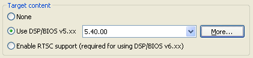

|
 |
Installation and Setup for DSP/BIOS 5.41
This version of DSP/BIOS is delivered as a component of Code
Composer Studio v4 (CCStudio). It is available for Microsoft Windows.
It includes support for all DSP families supported by DSP/BIOS: C28x,
C55x, and C6x.
For the latest information about what’s new in this
release and any known issues, see the release
notes (which, in turn, has links to other documents).
This document describes how to perform the following
tasks:
- Installing DSP/BIOS
- Setting System Variables
- Coordinating with CCStudio
- DSP/BIOS Examples
- More Information About DSP/BIOS
Installing DSP/BIOS
DSP/BIOS 5.41 is installed as part of the CCSv4 installation process.
If you ever need to uninstall
DSP/BIOS, an uninstaller is provided for Windows (Control Panel ->
Add/Remove Programs).
Setting System Variables
If you want to build with DSP/BIOS 5.41 outside the CCSv4 environment, follow these steps:
1. Create the BIOS_INSTALL_DIR system environment variable, and set it to <install_dir>/bios_5_41.
2. Insert the location of the XDCtools 3.15 installation at the beginning of your PATH system environment variable. (Remove any DSP/BIOS or XDCtools locations that were put in for earlier DSP/BIOS or XDCtools installations.) For Windows use back slashes (“\”) and a semicolon (;) between each system environment variable you add to the PATH. For example:
C:\Program Files\Texas Instruments\xdctools_3_15
Coordinating with CCStudio v4
In order to correctly build DSP/BIOS 5.41 applications, you need to enable DSP/BIOS support when creating a DSP/BIOS project. To watch a demo that creates a CCSv4 project that uses DSP/BIOS, see the Hello World DSP/BIOS 5 demo. See Section 2.1 of the TMS320 DSP/BIOS v5.41 User’s Guide (SPRU423) for descriptions of the steps in this demo. You can perform this demo yourself to test your installation.
When you are creating a CCSv4 project, the key step is to select the "Use DSP/BIOS v5.xx" option in the Target Content area of the "CCS Project Settings" page.

Converting CCSv3.3 Projects to CCSv4 Projects
To import a CCSv3.3 project, choose Project > Import Legacy CCSv3.3 Project
in CCSv4. Follow the instructions in the import wizard. For more
information about converting CCSv3.3 projects to CCSv4 projects, go to
the Code Composer Studio Mediawiki and read the "Migration" section of the page.
If
you are importing a project that uses DSP/BIOS, the import wizard asks
you to select the version of DSP/BIOS you want the imported project to
use. It is recommended that you select DSP/BIOS 5.41. This version of
DSP/BIOS is compatible with previous 5.x versions. If you select a
DSP/BIOS 6.x version, you will need to make changes to your source code
and configuration. If you select a DSP/BIOS version prior to 5.41, you
will not have access to the ROV tool and Real-time Analysis debugging
features.
DSP/BIOS
Examples
You can use the following sources
for example DSP/BIOS applications:
- DSP/BIOS
Examples. Some DSP/BIOS example source code and configurations are provided with this version of DSP/BIOS in the <install_dir>\packages\ti\bios\examples
directory. You can create your own CCSv4 projects that
contain these .c and .tcf files. The source code contains comments
about what the examples do.
The DSP/BIOS examples come preconfigured for a variety of platforms. If you have a platform that is not included, you should use a text editor to modify the .tcf file for the platform that is most closely related to yours. In particular, you will likely need to modify the platform named in the utils.loadPlatform() statement and the MEM module settings. See the DSP/BIOS Textual Configuration (Tconf) User’s Guide (SPRU007) for more information about platforms and .tcf files
- Application
Notes. A number of application notes have been provided about various
aspects of DSP/BIOS. Go to www.dspvillage.com
and choose Technical
Documents > Application Notes. Choose the "View by Software" tab and select
the "Operating Systems (OS/RTOS)" item.
- Device Driver Developer’s Kit. This kit comes with examples of how to develop drivers and how to integrate third-party drivers.
More Information About DSP/BIOS
See the following documents
available with this release and also on www.dspvillage.com to
learn about DSP/BIOS:
- TMS320 DSP/BIOS User’s Guide (SPRU423)
- TMS320C5000 DSP/BIOS API Reference Guide (SPRU404)
- TMS320C6000 DSP/BIOS API Reference Guide (SPRU403)
- TMS320C28x DSP/BIOS API Reference Guide (SPRU625)
- DSP/BIOS Textual Configuration (Tconf) User’s Guide (SPRU007)
- DSP/BIOS Driver Developer’s Guide (SPRU616)
- Online help in the DSP/BIOS Configuration Tool
- TI eXpressDSP Wiki
- Release notes
- Application notes
- DSP/BIOS Link documentation and application notes (for multiprocessor or OMAP applications)
- RTSC-Pedia for wiki-based information on RTSC and XDCtools

Copyright © 2009, Texas Instruments Incorporated
Code Composer Studio, DSP/BIOS, eXpressDSP, and TMS320 are
among the trademarks of Texas Instruments. See www.ti.com for a list of trademarks
and registered trademarks belonging to Texas Instruments.